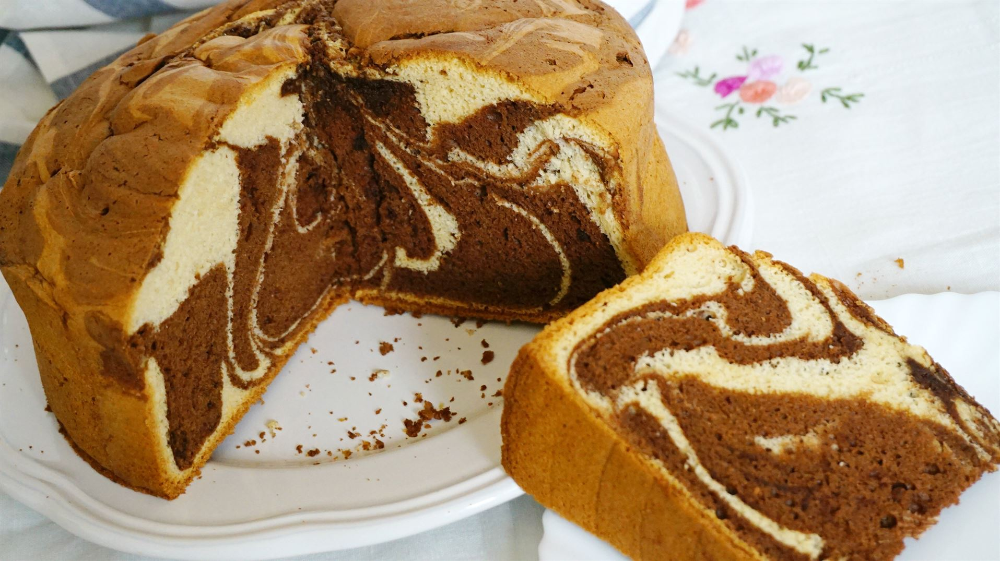

Receta bizcocho marmolado
Araceli
Información de la receta
Tiempo de preparación: 15 minutosTiempo de cocinado: 55 minutos
Tiempo total: 1 hora y 10 minutos
Raciones: 6
Calorías por racion (kcal): 540
Ingredientes:
-250 g de harina (2 tazas)
-200 g de azúcar (1 taza)
-3 huevos tamaño M
-125 g de aceite de girasol
-1 cucharadita de esencia de vainilla (opcional)
-15 g de cacao puro en polvo
-mantequilla para untar el molde
-125 g de yogur natural
-4 cucharas soperas de leche
-16 g de impulsor químico
Pasos a seguir:
1.Poner los 3 huevos en un bol con el azúcar y batir con varilla eléctrica durante 5 minutos
2. Añadir el aceite de girasol, la esencia de vainilla (opcional) y seguimos batiendo, después añadir el yogur y seguir batiendo

3.Incorporamos la harina y el impulsor químico con un colador y batir hasta tener una mezcla sin grumos
4.En otro bol, añadimos el cacao con la leche y mezclamos hasta que se disuelva

5.Ahora separamos las masas en dos partes, una con más masa y otra un poco más pequeña donde añadiremos la mezcla del cacao

6.Ahora ponemos papel de horno en el molde que vamos a usar y añadimos la mezcla del cacao a la masa de la que habíamos separado anteriormente, así continuamente hasta mezclararlas (primero la blanca, luego la marrón y así constantemente)

7.Precalentamos el horno a 180ºC con calor arriba y abajo, horneamos a 170ºC durante 55 minutos, esperamos a que se enfríe y ya podemos desmoldarlo